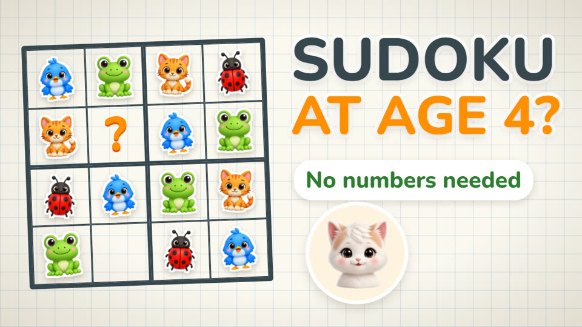

How to Teach Your Child Sudoku at Age 4 (No Numbers Needed)
Can a four-year-old solve sudoku? Yes, and they don't need to know a single number. Here is how to teach it, step by step, with nothing more than a sheet of paper and a few stickers.

3-minute video. Narrated in English with audio tracks and subtitles in Ukrainian, German, French, Spanish, Portuguese and Polish. The video loads from YouTube only after you press play.
Why sudoku works before a child can count
Sudoku isn't math. The numbers are just symbols, and you can use animals, colours or toys instead. What sudoku really practises is noticing patterns, checking an idea and not giving up. That's why it works even before a child can count.
Step 1: Start small
Start with a four-by-four grid and four different pictures. Draw the grid on paper and use stickers or small toys: you'll need four kinds, four of each. Fill in about half of the squares yourself and leave the rest for your child.
Step 2: One rule, three places
There's only one rule: each picture appears once in every row, once in every column and once in every small square. Show these one at a time. First the row: "Look, this row already has a cat, a frog and a bird." Then the column. Then the small square. Don't rush. Let each one sink in.
Step 3: Play "Who's missing?"
The easiest first move is a spot where three pictures are already in place and only one is missing. Point to it and ask: "Who's missing here?" Kids love finding the missing friend, and that is real sudoku logic.
Step 4: Mistakes are part of the game
When your child puts something in the wrong place, don't say "wrong". Ask a question instead: "Is there already a cat in this row?" Let them spot it themselves. That little "oh!" moment is the whole point.
Step 5: Keep it short and fun
Five to ten minutes is plenty. Stop while it's still fun, so they want to play again tomorrow.
Step 6: When to move to 6×6 and 9×9
When four-by-four feels easy, move up. As a rough guide: four-by-four around ages four to five, six-by-six around six to seven, and the classic nine-by-nine around eight to ten. Every child is different, so follow their pace, not the age.
A ready-made version: Sudimals
If you'd rather not cut out stickers every evening, we made Sudimals: real sudoku with animals instead of numbers, in 4×4, 6×6 and 9×9. A wrong animal simply bounces back, and the game gently helps when a child gets stuck. The first eleven levels of each size are free, then it's a one-time purchase. No ads, no data collection, works offline.
More for parents
Mosaic puzzles for kids: how to start at age 4 — another first logic game, with its own free printable.